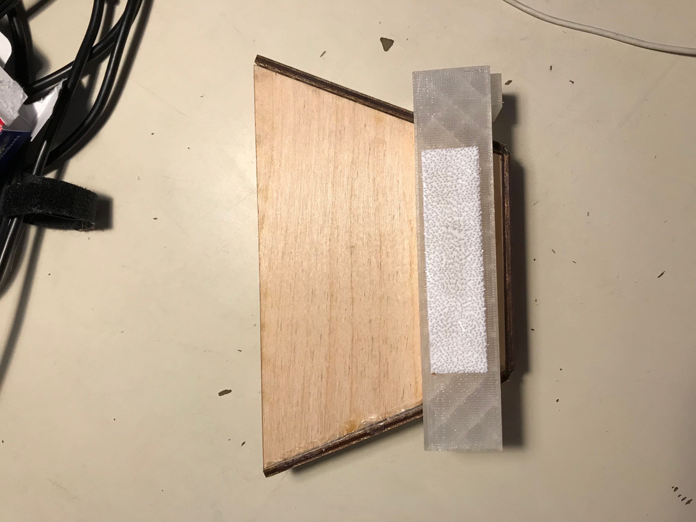
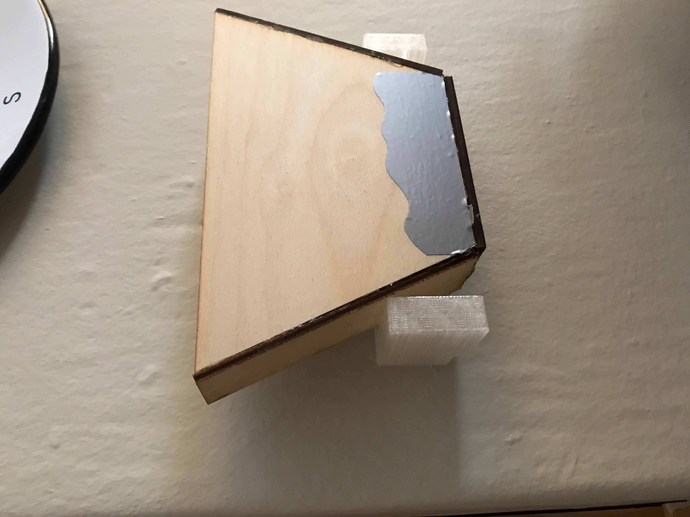
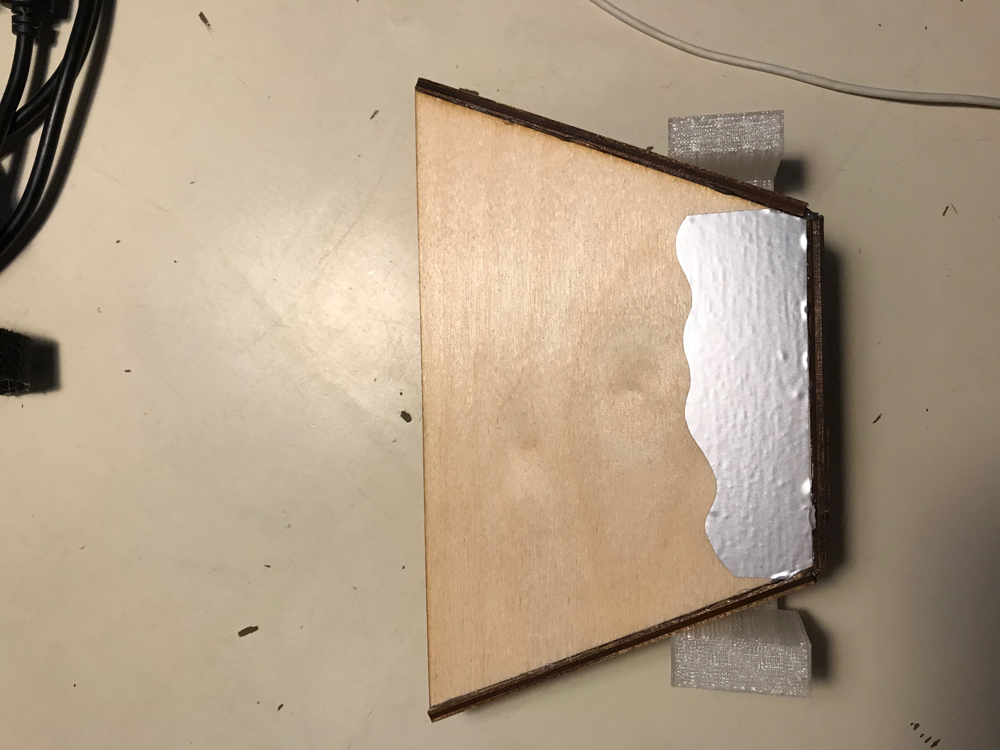

For my final project I made a phone speaker/phone holder. First I laser cut the five pieces of wood needed to make main componet, I designed the pieces on corel draw. Next I 3D printed the holder, I designed this part on fusion 360. Next I cut out a vinyl sticker I made on corel draw. Next I added a piece of velcro to the back so I can attach it to my wall or in a car. The four processes I used where laser cutting, CAD, 3D printing and vinyl cutting.
  